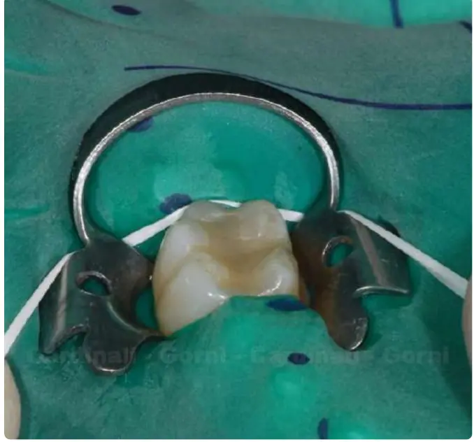

نسخه استخراجشده؛ ترجمه یا تأیید علمی انجام نشده است. وضعیت: captured
قدم 1 · theory
جمعبندی روشهای گذاشتن رابردم
کلمپ اول: کلمپ تنها، بعد ورق از روی کمان و زیر فکها. دید عالی، دودستی؛ فقط یککمانه و ترجیحاً بیبال؛ نه با ورق بدون لاتکس. بیشترین خطر بلعیدن، پس نخ ایمنی.
بال: بالها در سوراخ، کلمپ و ورق با هم، بعد ورق با ابزار غیربرنده از روی بالها پایین. سریع و ایمن؛ دید کم.
ورق اول: دستیار ورق را مینشاند، دندانپزشک کلمپ میکند. هر کلمپی؛ انتخاب اول برای کلمپ 212 و ورق بدون لاتکس.
پاراشوت: کمان در سوراخ، ورق جمعشده، کلمپ با دید کامل، بعد فریم و لغزاندن ورق زیر فکها. برای کمانی که به راموس یا زایگوما فشار میآورد.
چند نکتهی کاربردی
در روشهای کمدید (بال و ورق اول)، شروع کمعمق حفرهی دسترسی پیش از رابردم هم دندان را نشانهدار میکند و هم بیحسی را میآزماید؛ افزودن بیحسی زیر رابردم دشوار است.
اگر دندانی دیستالتر از دندان کلمپشده هست، لبهی دیستال سوراخ را از تماس دیستال رد کن؛ اگر کلمپ بپرد، ورق لنگر میماند و گذاشتن دوبارهی کلمپ آسانتر است.
در تماس دیستال نخ از پشت کمان میگذرد؛ در کلمپ دوکمانه از پشت هر دو کمان.

برای رد کردن ورق از تماس دیستال، نخ باید از پشت کمان کلمپ بگذرد. (Cardinali & Gorni. The Use of the Rubber Dam in Endodontics (StyleItaliano) — Fig. 2 (Ch.10))
قدم 2 · question
در کلمپ دوکمانه، برای بردن ورق به تماسها معمولاً باید نخ را از پشت هر دو کمان رد کرد.
۰۱
صحیح
۰۲
غلط
قدم 3 · question
در روشهای کمدید، شروع کمعمق حفرهی دسترسی پیش از رابردم جز نشانهدار کردن دندان چه سود دیگری دارد؟
۰۱
بیحسی را میآزماید، چون افزودن بیحسی زیر رابردم دشوار است
۰۲
بزاق را کم میکند، چون حفرهی باز رطوبت کمتری در خود نگه میدارد
۰۳
کلمپ را پایدارتر میکند، چون فکها در حفره گیر میکنند
۰۴
سوراخ ورق را کوچکتر میکند، چون تاج باریکتر میشود
قدم 4 · question
اگر دندانی دیستالتر از دندان کلمپشده هست، چرا لبهی دیستال سوراخ را از تماس دیستال رد میکنی؟
۰۱
ورق دور دندان کلمپشده سیل میشود و اگر کلمپ بپرد، ورق لنگر میماند
۰۲
کلمپ دیگر نخ ایمنی نمیخواهد، چون ورق لنگرشده آن را روی دندان محکم نگه میدارد
۰۳
ورق روی فریم کشیدهتر میشود و کمان کلمپ از دید بیرون میرود
۰۴
فکهای کلمپ زیر ورق پنهان میشوند و دیگر به لثه فشار نمیآورند
قدم 5 · question
در روش کلمپ اول، ورق را پس از کمان همیشه باید اول زیر فک باکال برد و بعد زیر فک لینگوال.
۰۱
صحیح
۰۲
غلط
قدم 6 · question
در روش بال، ورق را پیش از نشاندن کلمپ روی دندان از روی بالها آزاد میکنی تا دید دندان بهتر شود.
۰۱
صحیح
۰۲
غلط
قدم 7 · question
در روش ورق اول اصلاحشده، دستیار با دست دومش چه میکند؟
۰۱
گوشههای بالای ورق را نگه میدارد تا ورق تا نشود و دید را نگیرد
۰۲
فورسپس کلمپ را نگه میدارد تا دندانپزشک ورق را با دو دست روی دندان ببرد
۰۳
زبان بیمار را با آینه کنار میزند تا دندان هدف دیده شود
۰۴
نخ ایمنی را میکشد تا کلمپ صاف بماند
قدم 8 · question
در روش پاراشوت، هنگام نشاندن کلمپ باید مراقب بود که فکهای کلمپ به سمت لثه نلغزند.
۰۱
صحیح
۰۲
غلط
قدم 9 · question
برای ورق بدون لاتکس، کدام گزینه چهار روش را درست ارزیابی میکند؟
۰۱
کلمپ اول بهترین؛ ورق اول شدنی نیست؛ پاراشوت توصیه نمیشود
۰۲
ورق اول بهترین؛ کلمپ اول نه؛ پاراشوت توصیه نمیشود
۰۳
پاراشوت بهترین؛ کلمپ اول شدنی نیست؛ ورق اول توصیه نمیشود
۰۴
ورق اول و پاراشوت هر دو خوب؛ کلمپ اول نه
قدم 10 · question
دانشجویی از کیت کلمپ W14A را برداشته تا مولر نیمهرویشیافته را با روش بال ایزوله کند. پیش از شروع، چه چیزی را باید به او گوشزد کنی؟
۰۱
W14A بالهای بزرگی دارد و در روش بال ورق را پاره میکند و درز میگذارد
۰۲
W14A فقط برای دندانهای قدامی است و روی مولر نمینشیند
۰۳
W14A دوکمانه است و فقط با روش ورق اول جا میافتد
۰۴
W14A بال ندارد؛ یا روش را عوض کند یا نسخهی بالدار را بردارد
قدم 11 · question
کدام دو روش با کلمپ دوکمانهی قدامی شدنی نیستند؟
۰۱
روش ورق اول و کلمپ اول
۰۲
روش ورق اول و روش بال
۰۳
کلمپ اول و پاراشوت
۰۴
روش بال و روش پاراشوت
قدم 12 · question
در روش بال روی مولر اول پایین، پس از آزاد کردن ورق از بالها معلوم میشود مولر دوم کلمپ شده است. دندان هدف پوسیدگی آشکاری نداشت. کدام کار در شروع جلوی این خطا را میگرفت؟
۰۱
وصل کردن فریم پیش از بردن کلمپ به دهان تا ورق صاف باشد
۰۲
بستن نخ ایمنی بلندتر به کمان کلمپ بالدار پیش از بردن آن به دهان
۰۳
زدن سوراخ بزرگتر تا دندانهای کناری دیده شوند
۰۴
شروع کمعمق دسترسی پیش از رابردم تا دندان هدف نشانهدار شود
قدم 13 · question
در روش کلمپ اول، دانشجو کلمپ نخدار را روی دندان گذاشت و برای آوردن ورق نخ را روی سینهی بیمار رها کرد. کلمپ پرید و در دهان افتاد. کدام کار درستتر بود؟
۰۱
کلمپ را بینخ و محکمتر ببندد تا نخ مانع کشیدن ورق نشود
۰۲
نخ را کوتاهتر و محکمتر ببندد تا کلمپ هرگز نتواند از روی دندان بپرد و در دهان بیفتد
۰۳
سر نخ را بیرون دهان در دست خود یا دستیار نگه دارد تا کلمپ را فوری بیرون بکشد
۰۴
کلمپ را بیشتر باز کند تا فکها پایینتر و محکمتر روی گردن دندان بنشینند و نپرند
قدم 14 · question
بیماری با رفلکس گگ شدید برای درمان ریشهی پرمولر دوم پایین آمده که روکش موقت شکستهای دارد و بهراحتی شناخته میشود. دستیار نداری و کلمپ بالدار پرمولر آماده است. کدام برنامه بهتر است؟
۰۱
روش پاراشوت؛ کلمپ بالدار برای این روش از همه مناسبتر است
۰۲
روش ورق اول؛ دستیار نداری ولی بیمار گگی دستهای کمتری را هنگام کار در دهانش حس میکند
۰۳
روش کلمپ اول؛ کلمپ بالدار با کشش کمتر ورق روی این دندان جا میافتد و کمتر میلرزد
۰۴
روش بال؛ سریع و کمتهاجمی است و دید کمش با دندان نشانهدار مشکلی نمیسازد